ダウンロード
リンクを開き、ダウンロードされた .exe を実行します。
Windows向けの手順です。画面が少し違っても、基本は既定の選択のまま「Next」で進めて大丈夫です。
Git for Windows を公式サイトから入手する ↗
リンクを開き、ダウンロードされた .exe を実行します。
ライセンスからエディター選択までは、迷えば既定値のまま Next。
Override … を選び、入力欄を main にします。
Git from the command line … を選択。PowerShellやVS Codeから使えます。
HTTPS 接続の設定では、Use the OpenSSL library を選択して Next。
改行、ターミナル、pull、認証、追加機能は既定値のまま進みます。
Install 後、PowerShellで git --version。番号が出れば成功です。
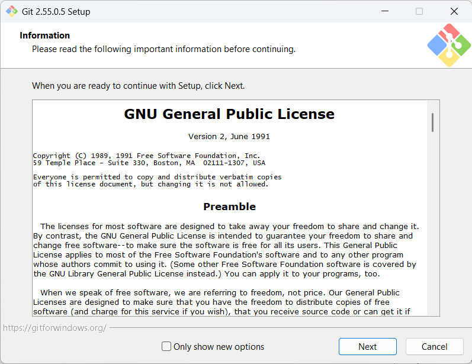
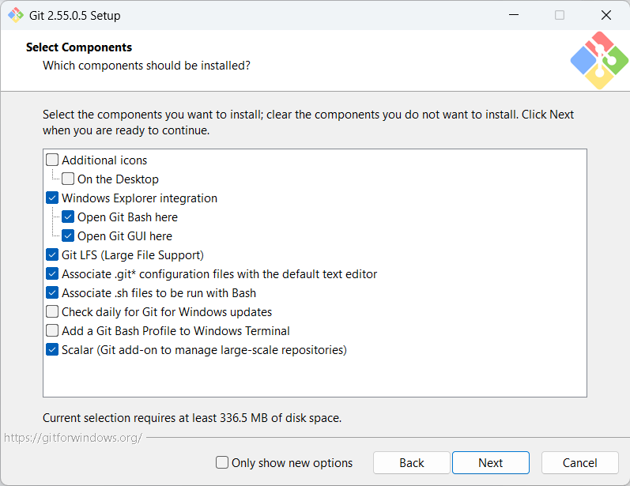
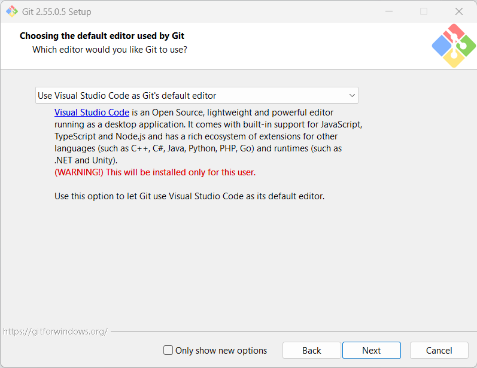
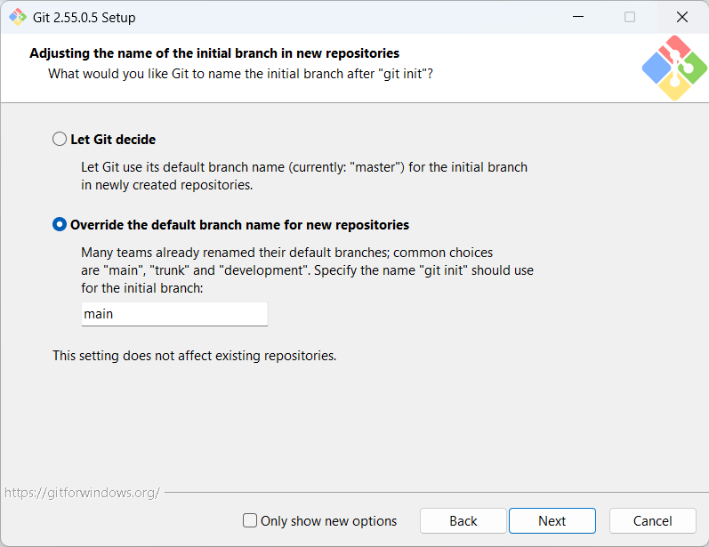
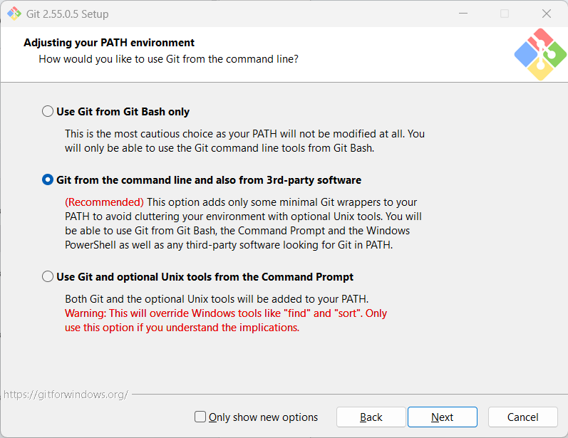
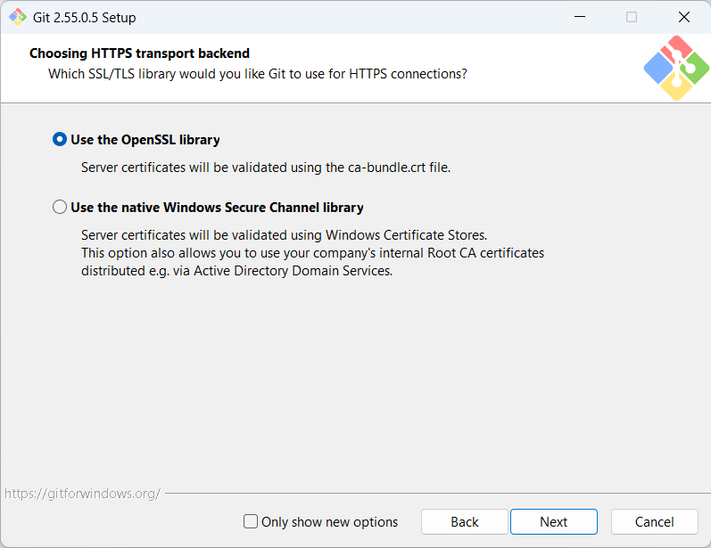
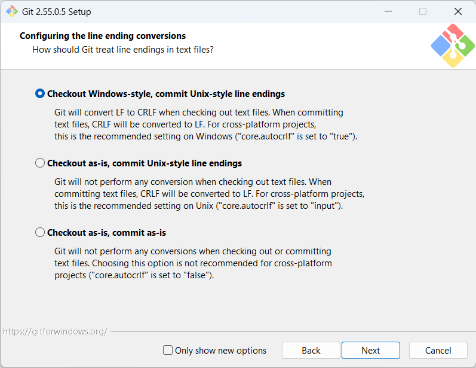
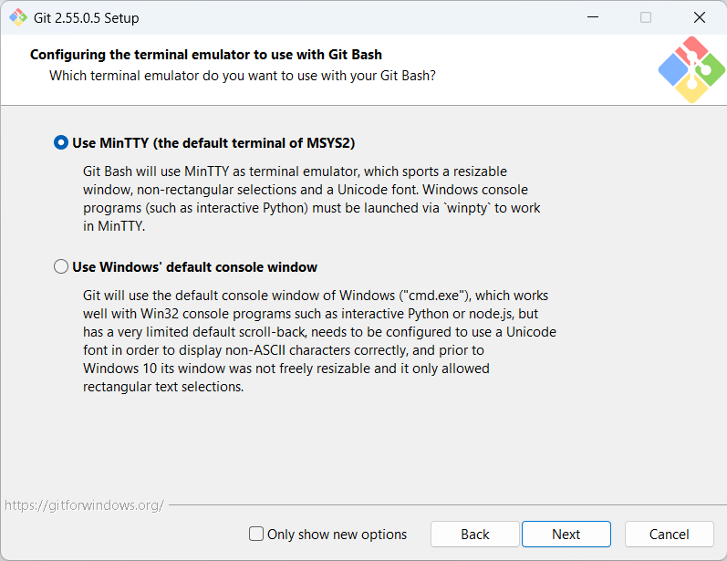
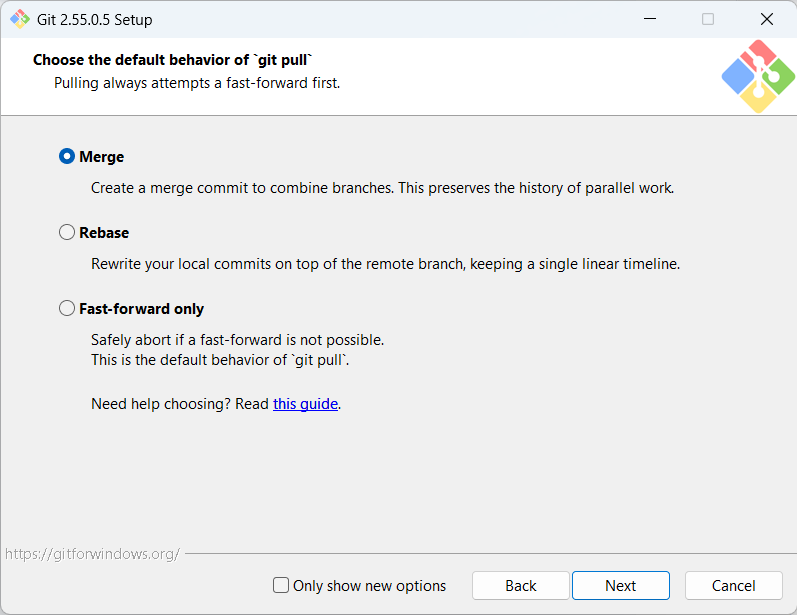
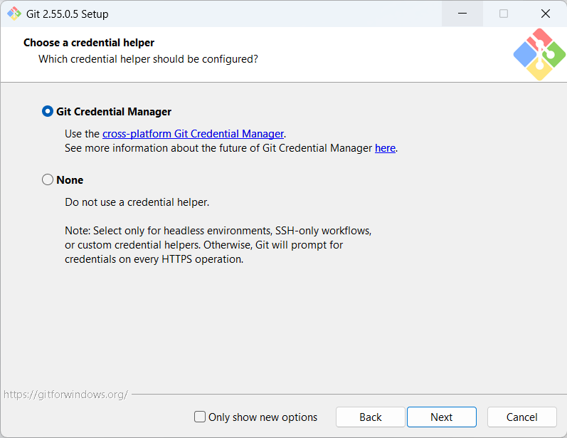
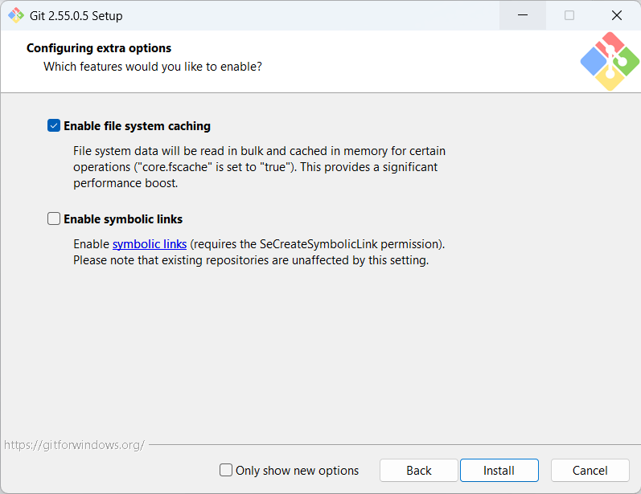
GitHubにコードを保管するには、メールアドレスを確認済みの個人アカウントが必要です。登録後は2段階認証も設定すると安心です。
 GitHub
GitHubgithub.com/signup にアクセス。Google／Appleで始めることもできます。
メールアドレス、強力なパスワード、ユーザー名を入力し、案内に従います。
届いた確認メールのリンクを開けば登録完了です。
コマンドを覚える前に、Git が何を記録し、どこへ送っているのかを押さえましょう。最初は「PCの中で記録する」と「GitHubへ送る」を分けて考えると、迷いにくくなります。
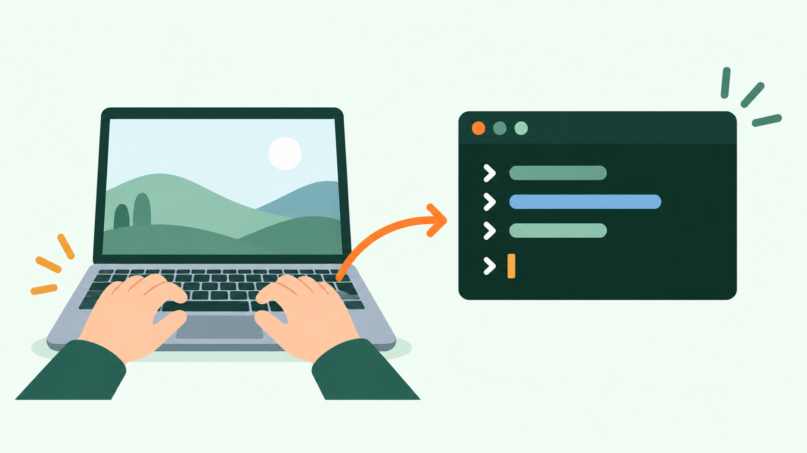
文字でPCに指示を出すための画面です。Windowsなら PowerShell、Windows Terminal、コマンドプロンプト、または VS Code の下部にある「ターミナル」を使えます。ここに git status のような命令を書いて Enter を押します。黒い画面でも、決められた命令を実行するための入力欄だと思えば大丈夫です。
ファイルそのものと、その変更履歴をまとめて管理する「作業箱」です。Webサイトなら、HTML・画像・CSSなどを1つのリポジトリに入れます。Gitが履歴を管理する対象がリポジトリです。
ローカルは自分のPC内、リモートはインターネット上の保管場所です。このガイドではGitHubがリモートです。まずPC内で記録し、必要なタイミングでGitHubへ送ります。
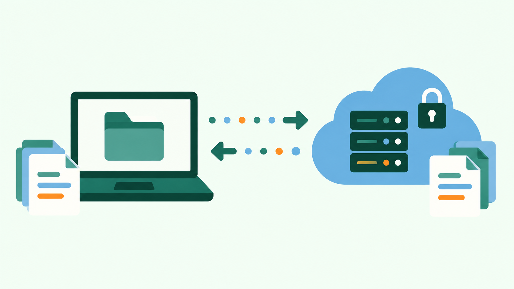
commit まではPC内だけで完結します。push すると、記録した変更がGitHubにも届きます。反対に、GitHubや別のPCで増えた変更を手元へ取り込むのが pull です。
git init
今あるフォルダを、Gitで履歴管理できる状態にします。新規フォルダで最初に1回だけ行う操作で、これだけではGitHubへは送られません。
git add .
次に保存したい変更を「今回の記録に入れる」と選ぶ操作です。. は、このフォルダ内の変更をまとめて選ぶ意味です。
git commit -m "メモ"
スタンバイした変更を、説明メモ付きで履歴として固定します。ここではまだ自分のPC内に保存されているだけです。
git push
PC内に保存したコミットを、GitHubのリモートリポジトリへ送ります。公開サイトの自動更新も、多くはこの操作がきっかけです。
git clone URL
すでにGitHubにあるリポジトリを、履歴ごと自分のPCへ持ってきます。別PCで作業を始めるときや、他人のプロジェクトを受け取るときに使います。
git pull
GitHub側や別のPCで増えた変更を、手元の作業フォルダへ取り込みます。作業前に行うと、最新の状態から始められます。
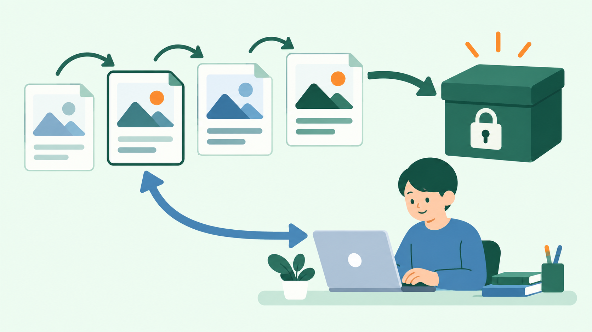
git restore：前の内容を取り出す過去のコミットに保存されているファイル内容を、現在の作業フォルダへ取り出す操作です。履歴そのものを消すのではなく、過去の内容を新しい変更として持ち帰れるので、比較的安全に戻せます。実際の手順は、このあとの「前の状態を確認・安全に復元する」で説明します。
Gitの命令は、どのフォルダに対して実行するかが大切です。Webサイトを保存したいフォルダを開いてからターミナルを使いましょう。違う場所で実行すると、意図しないフォルダにGitの記録が作られてしまいます。
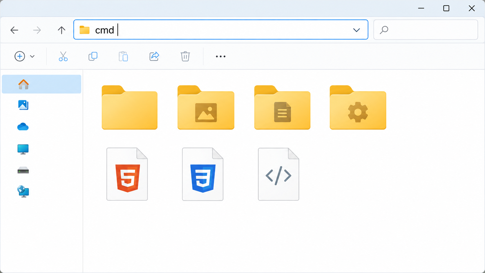
保存したいフォルダをエクスプローラーで開きます。上部のアドレスバーをクリックし、cmd と入力して Enter を押します。
そのフォルダを現在地にしたコマンドプロンプトが開きます。黒い画面の行末が、今開いていたフォルダのパスになっていれば成功です。
エクスプローラーで対象フォルダを開く → アドレスバーへ cmd → Enter。初めてなら、この方法が迷いにくくおすすめです。
PowerShell、Windows Terminal、コマンドプロンプトなどを先に開いた場合は、cd で対象フォルダへ移動します。パスに空白があることもあるので、全体を " " で囲みます。
cd "C:\Users\ユーザー名\Documents\my-website"
エクスプローラーでフォルダを右クリックし、「パスのコピー」を選ぶと、入力しやすくなります。
コマンドは PowerShell、Windows Terminal、コマンドプロンプト、または VS Code のターミナルで実行できます。準備ができたら、次の2通りの始め方を見ていきましょう。
git init git add . git commit -m "初回作成" gh repo create
gh repo create の質問では「既存のローカルリポジトリを push」「Private」「Yes」を選べばOK。先に gh auth login でログインします。
方法1：GitHub CLIで取得する
gh repo clone ユーザー名/リポジトリ名 cd リポジトリ名
例：gh repo clone octocat/my-website。コピー済みのフォルダでは git init は不要です。
方法2：GitHub側でリポジトリを作成してから取得する
GitHubで New repository を選び、名前を決めて作成します。その後、リポジトリページの緑色の Code ボタンから HTTPS のURLをコピーし、次を実行します。
git clone https://github.com/ユーザー名/リポジトリ名.git cd リポジトリ名
git status。別PCでも作業したなら git pull。git add . → git commit -m "変更内容" で履歴に保存する。git push で GitHub に送る。git status git add . git commit -m "スマホ表示を調整" git push
「少し前は正常だった」というときは、履歴から戻したい時点を探します。まずは過去の内容を確認するだけにして、問題なければ現在の main に復元しましょう。
変更の一覧を表示します。左端の英数字がコミットIDです。戻したい行の、先頭7〜8文字ほどを控えます。
git log --oneline
控えたコミットIDを指定して、その時点のファイルを確認します。これは閲覧用なので、この状態で編集はしません。
git switch --detach xxxxxxx
確認が済んだら、通常の作業場所である main に戻ります。この状態に戻してから復元を行います。
git switch main
戻したいコミットIDの内容を、現在の作業フォルダへ取り出します。履歴そのものは消えません。
git restore --source xxxxxxx -- .
復元後は、普段どおり保存して GitHub へ送ります。 xxxxxxxx は、実際に戻したいコミットIDに置き換えてください。
git add . git commit -m "以前の状態に復元" git push
GitHub側にまだ受け取っていない変更がある場合は、先に git pull。未保存の作業があれば、先にコミットしてから実行します。
GitHubアカウントは、コードを保管する場所であるだけでなく、開発に使うサービスをつなぐ共通の窓口にもなります。サービス側でGitHub連携を設定すると、リポジトリの更新を起点に作業や公開を自動化できます。
Codex や Claude Code などは、許可したGitHubリポジトリを読み取り、変更案やコミット・Pull Requestの作成を支援できます。ChatGPTやClaudeの通常利用にGitHubログインが必須というわけではありませんが、開発作業ではリポジトリ連携が役立ちます。
GitHub Pages、Netlify、Cloudflare Pagesなどは、リポジトリを連携して公開できます。公開対象のブランチを設定すれば、通常は git push をきっかけに最新サイトを自動デプロイします。
SupabaseやFirebaseでは、GitHub連携やGitHub Actionsを使い、データベースの変更・Edge Functions・Hostingのデプロイを管理できます。お問い合わせフォーム、予約、ログイン、リアルタイムチャットなどの機能を支える基盤になります。
大切なポイント：GitHubアカウントを作っただけで、AIが自動で公開したり、サイトが勝手に更新されたりはしません。各サービスでリポジトリへのアクセスを許可し、公開先・対象ブランチ・必要な環境変数を設定して初めて自動化されます。連携するリポジトリは必要なものだけに絞り、GitHubでは2段階認証を有効にしましょう。
参考：GitHub Pages ／ Netlify ／ Cloudflare Pages ／ Supabase ／ Firebase Hosting